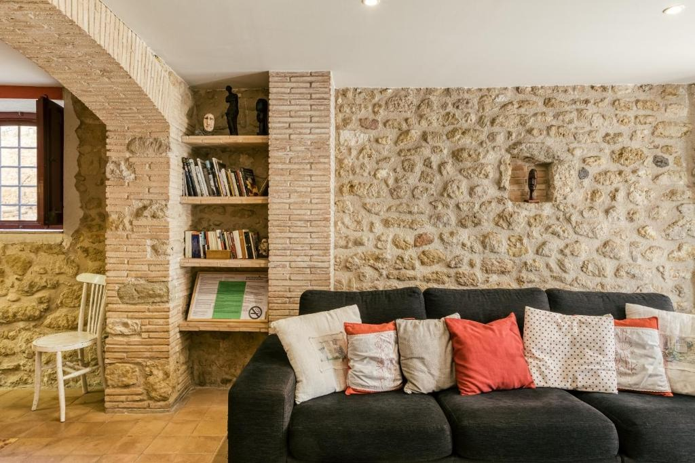
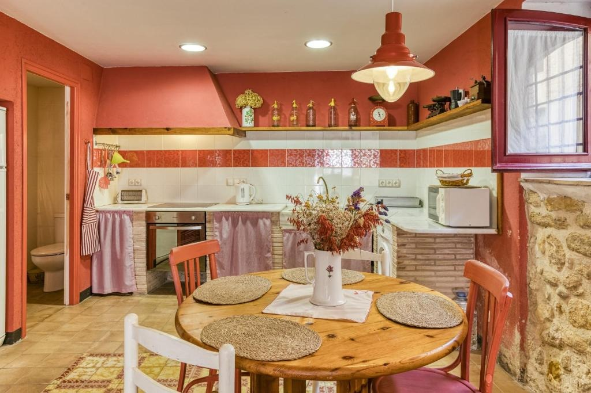
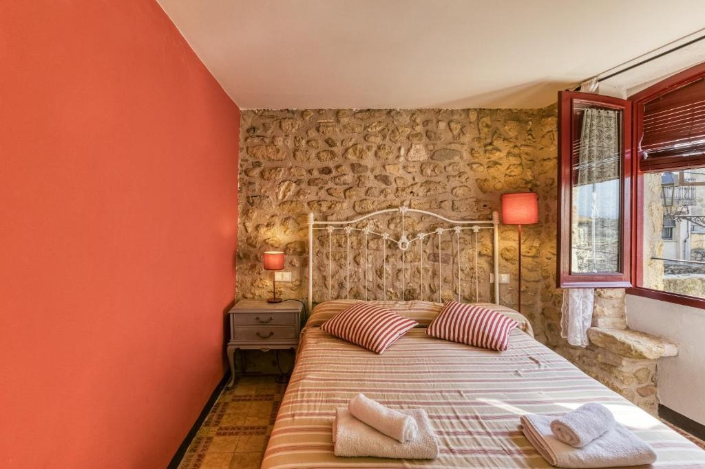
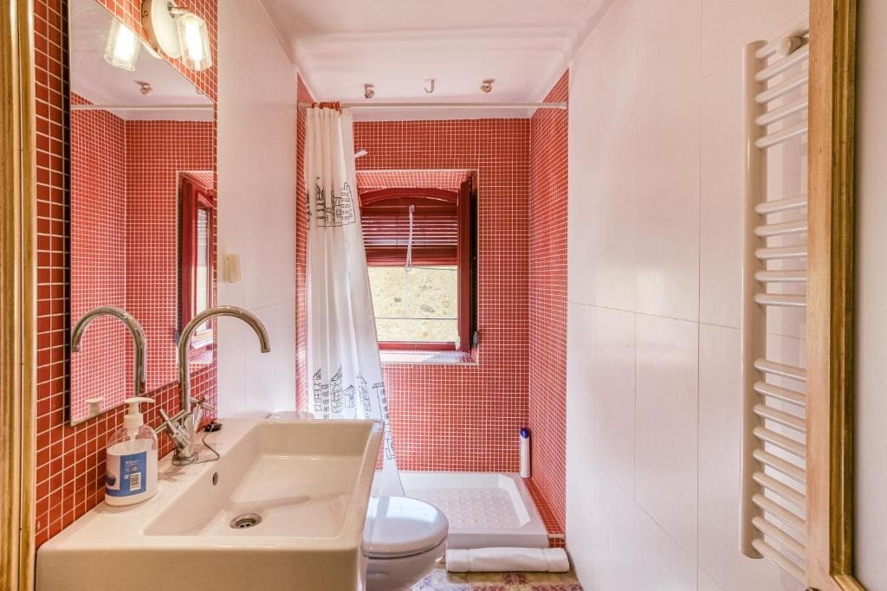

Casa Vermella
Una casa de pedra amb llar de foc i jardí, a Orriols
Casa sencera
100 m²
2 dormitoris
5 llits · 1 bany
Fins a 6 persones
Famílies i amics
Admet mascotes
Pot comportar algun càrrec
La casa
Una casa sencera per descansar a Orriols
Casa Vermella és una casa de 100 m² a Orriols, amb jardí i WiFi gratuït. Té 2 dormitoris i 5 llits, una cuina amb forn i microones i un bany amb dutxa, amb articles d’higiene gratuïts i rentadora.
A la casa hi trobaràs roba de llit i tovalloles, i també una zona de jocs infantil perquè els més petits tinguin on jugar. L’allotjament és sencer per a tu: ningú més hi entra durant l’estada.
Sala d’estar
Sala amb llar de foc i llibres
Una sala càlida amb parets de pedra, sofàs còmodes, prestatgeries amb llibres i llar de foc.
Un lloc perfecte per a converses i nits tranquil·les.

Cuina
Cuina amb forn i microones
Cuina equipada amb forn, microones, cafetera i bullidor elèctric, i una taula per esmorzar o sopar tots junts.
A la casa també hi ha rentadora.

Dormitoris
Dos dormitoris i cinc llits
La casa té 2 dormitoris i 5 llits en total, amb roba de llit i tovalloles incloses.
Pensada per a famílies o un grup petit d’amics.

Bany
Bany amb dutxa
Un bany amb dutxa i articles d’higiene gratuïts, amb rajola vermella que fa joc amb tota la casa.

A la casa
Serveis i comoditats
Tot el que necessites per a l’estada, a la casa sencera i només per a tu i el teu grup.
- Casa sencera només per a tu
- 2 dormitoris i 5 llits
- 1 bany
- Jardí
- Cuina amb forn i microones
- Cafetera i bullidor elèctric
- Bany amb dutxa i articles d’higiene gratuïts
- Rentadora
- WiFi gratuït
- Aparcament gratuït al carrer
- Admet mascotes (pot comportar algun càrrec)
- Zona de jocs infantil
- Roba de llit i tovalloles
- Habitacions sense fum
L’entorn
A prop de la casa
Orriols és un petit poble de l’Alt Empordà. Des de la casa hi ha esglésies, ermites i el castell de Vilademuls a pocs quilòmetres, i molts camins per fer en bicicleta o a peu. Distàncies calculades amb OpenStreetMap.
Església de Sant Joan
4,6 km
Castell de Vilademuls
4,6 km
Església de Sant Martí de Fellines
4,8 km
Església de Sant Vicenç
5,2 km
Ermita de Sant Sebastià
5,3 km
Església de Sant Martí
6,1 km
Aeroport de Girona - Costa Brava
35 km
Galeria d’imatges de Casa Vermella
Totes les fotos de Casa Vermella: espais, habitacions i racons de la casa.


Reserva
Vols viure Casa Vermella?
Consulta disponibilitat i preus, o reserva directament a Booking.